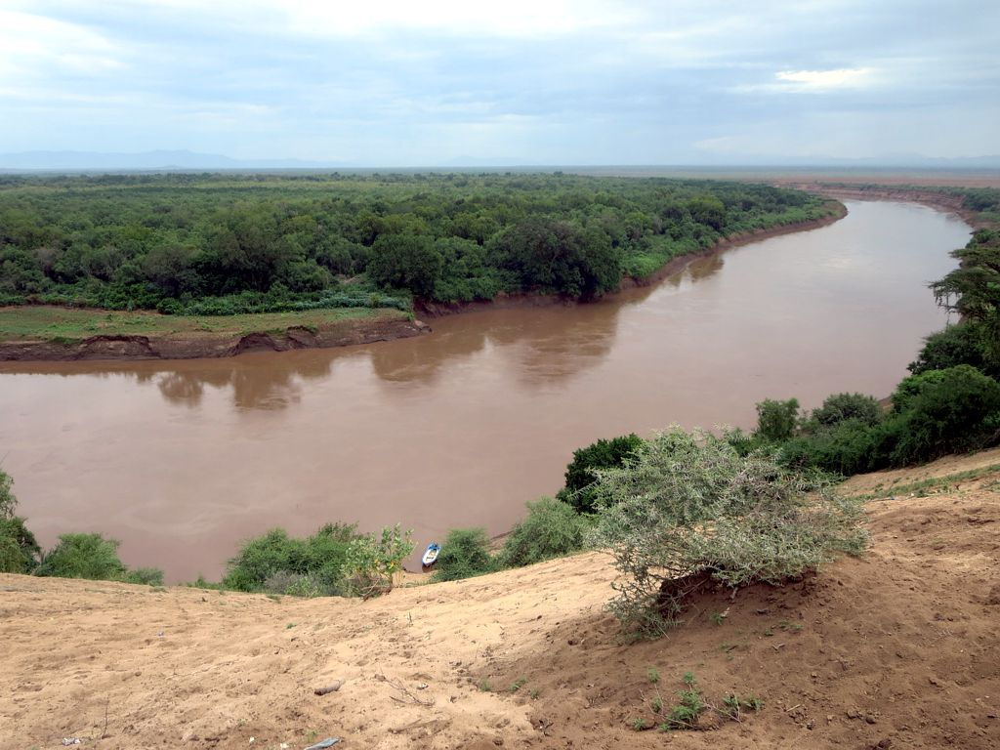
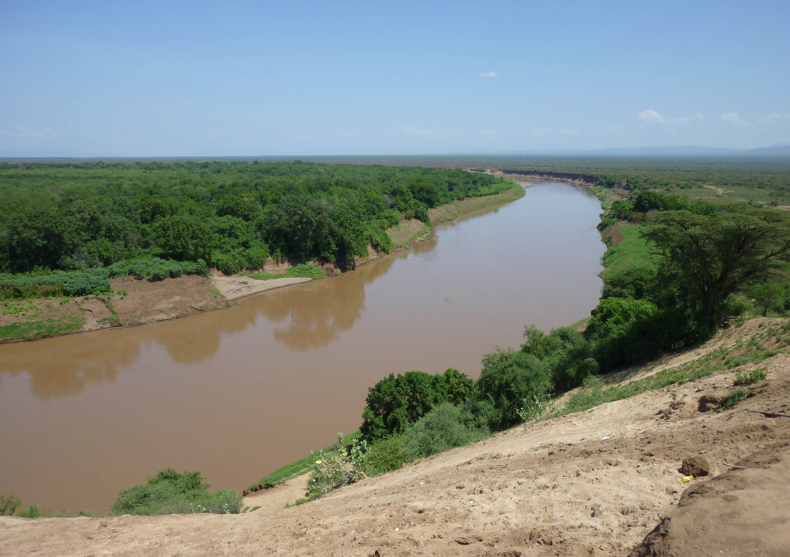
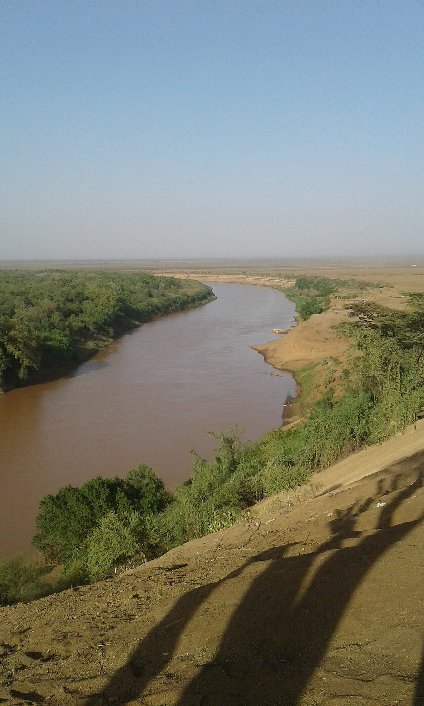

Carved through the sun-bleached expanse of southwestern Ethiopia, the Lower Valley of the Omo stands as a monumental storehouse of human origin, inscribed as a UNESCO World Heritage site in 1980 for its unparalleled fossil records and deep-time geological strata.
| Location: | South Ethiopia Regional State, Ethiopia (4.8000, 35.9667) |
| Year of UNESCO Inscription: | 1980 |
| Category: | Cultural |
| UNESCO Reference: | 92 |
| Criteria: | (iii)(iv) |
| Coordinates: | 4.8000, 35.9667 |
| Area: | 165 km length (fossiliferous zone) |
The Lower Valley of the Omo occupies a crucial geographic position within the Great Rift Valley, a vast tectonic trench slicing through East Africa. Over millions of years, the relentless pulling apart of the Earth's crust created a deep basin fed by the ancient Omo River, which flows south from the Ethiopian Highlands before terminating in Lake Turkana. This dynamic lacustrine and riverine system accumulated vast layers of volcanic ash, silt, and gravel, encasing organic remains in an extraordinarily protective environment.

The unique geological architecture of the Omo basin allows paleontologists to read the Earth's history like pages in an open book. Periodic volcanic eruptions deposited distinct bands of volcanic tuffs across the landscape. Through argon-argon dating and tephrochronology, scientists have been able to establish an exceptionally precise chronological timeline for the fossilized remains trapped between these volcanic markers. Consequently, the site provides an unbroken bio-stratigraphic record spanning from over 3.5 million years ago to the late Pleistocene epoch.
Few places on Earth offer such a continuous and dense record of mammalian evolution. The sediments of the Lower Omo Valley have yielded tens of thousands of fossilized animal bones, representing ancestral forms of elephants, hippopotamuses, giraffes, bovids, and primates. This fossil wealth allows researchers to reconstruct ancient ecosystems with unprecedented accuracy, documenting how past fauna adapted to shifting climates, changing hydrology, and evolving vegetation patterns across millions of years.
Paleontological exploration in the Omo basin gained international momentum during the mid-20th century, spearheaded by the International Omo Research Expedition (IORE), directed by French paleontologist Camille Arambourg, American anthropologist F. Clark Howell, and Ethiopian authorities, alongside pioneering work by Richard Leakey. In 1967, Leakey’s team operating near the Kibish Formation unearthed two pivotal hominin cranial fragments designated as Omo I and Omo II. These fossils altered modern understanding of human evolution.
For decades, the exact age of the Omo I fossil remained a subject of intense scientific inquiry. Initial estimates dated the specimen to roughly 130,000 years ago, but sophisticated geochemical re-evaluations of the overlying volcanic ash layers published in the early 2020s pushed the age of Omo I back to approximately 233,000 years. This discovery firmly established Omo I as one of the oldest known anatomically modern Homo sapiens specimens ever discovered, cementing Ethiopia’s reputation as the primary evolutionary hearth of our species alongside discoveries at the Lower Valley of the Awash.
Beyond modern humans, the Omo Valley has preserved crucial stages of hominin radiation. Sediments across the region have produced fossil remains attributed to early hominins such as Australopithecus afarensis, Paranthropus boisei, Homo habilis, and early Homo erectus. The co-occurrence and succession of these diverse hominin species within the same geographical zone highlight the Omo Valley as an intense evolutionary incubator where ancestral hominins competed, adapted, and diversified over millions of years.
At the center of the site's UNESCO recognition is the extraordinary Shungura Formation, a exposed stratigraphic column extending over 760 meters in thickness. Composed of alternating beds of fluvial sands, silts, clay, and volcanic tuffs, the Shungura sequence covers an unbroken temporal window from approximately 3.6 to 1.0 million years ago. It is widely regarded by geologists as one of the most complete terrestrial sedimentary sequences of the Pliocene and early Pleistocene eras in the entire world.

Each distinct volcanic tuff layer within the Shungura Formation is designated alphabetically from Tuff A at the base to Tuff L near the top. Because these volcanic layers can be chemically fingerprinted and radio-metrically dated with high precision, any fossil or stone tool discovered between two layers can be assigned a tight age range. This fine-grained temporal resolution has made the Shungura Formation the global standard for dating mammalian evolution and environmental change in Plio-Pleistocene Africa.
The continuous exposure of these deposits is maintained by the erosional forces of wind and monsoon rain, which gradually scour away the surrounding soil, exposing ancient bones and artifacts that have remained buried for millions of years. Walking through the badlands of the Shungura Formation offers a rare encounter with deep time, where fossilized tree trunks, extinct mammalian teeth, and early hominin remains rest directly upon the sun-baked soil.
While the UNESCO World Heritage inscription focuses primarily on paleontology and geology, the Lower Valley of the Omo is equally world-renowned for its extraordinary cultural diversity. The basin is home to over a dozen distinct indigenous ethnic groups, including the Mursi, Suri, Hamar, Kara, Dasanach, and Nyangatom. These communities have adapted over centuries to the semi-arid climate of the rift valley, maintaining agro-pastoral lifestyle practices that rely on seasonal flood-retreat agriculture along the banks of the Omo River.

The cultural practices of the Omo tribes are among the most distinct on the African continent. The Mursi and Suri are celebrated for their intricate body paint designs and the ceremonial lip plates worn by women, a tradition linked to social status, identity, and rites of passage. The Hamar people are widely recognized for their elaborate bull-jumping ceremony, an ancient initiation rite that young men must complete to transition into adulthood, accompanied by traditional dancing and body adornment.
These indigenous societies possess deep ecological knowledge passed down through generations, allowing them to manage fragile rangelands, herd livestock, and cultivate sorghum along the riverbanks. However, their traditional lifeways exist in delicate balance with the environment, mirroring the ancient human adaptations recorded in the sedimentary layers beneath their feet. The living heritage of the Omo Valley serves as a vital bridge between modern human diversity and our ancestral roots.
The Lower Valley of the Omo has yielded some of the earliest physical evidence of human cognitive and technological development. Scattered throughout the sedimentary layers of the Shungura and Members B through F are thousands of primitive stone artifacts belonging to the Oldowan lithic industry, dating back between 2.4 and 2.3 million years ago. These artifacts represent a landmark moment in hominin evolution: the intentional fashioning of raw materials into functional tools.

The stone tool assemblages from Omo consist primarily of small quartz cobbles flaked to produce sharp edges, alongside simple cores and hammerstones. Early hominins used these rudimentary tools to butcher animal carcasses, extract nutrient-rich bone marrow, and process tough plant materials. Unlike later, highly standardized handaxes found at younger sites, the Omo Oldowan tools display opportunistic manufacturing techniques, reflecting the emerging cognitive capacity for problem-solving and environmental manipulation.
The spatial association of these stone tools with fossilized animal bones bearing cut marks provides direct evidence of early hominin carnivory and scavenging strategies. The ability to craft sharp-edged stones enabled hominins to access high-protein food sources, fueling brain expansion and driving the complex social behaviors that defined the subsequent trajectory of the genus Homo.
Reconstructing ancient environments is essential to understanding why human evolution accelerated in East Africa, and the Omo Valley provides a masterclass in paleoecology. Geochemical analysis of soil carbonates, fossil pollen, and micro-mammalian teeth has revealed that the Omo basin experienced dramatic climate shifts over the last 4 million years, alternating between wet, humid periods and severe arid cycles.

During wetter epochs, the ancient Omo River nourished dense riverine gallery forests, extensive wetlands, and closed woodlands that supported arboreal primates and browsers. As the global climate cooled and dried during the early Pleistocene, these dense forests retreated, giving way to broad, open savanna grasslands dominated by C4 vegetation. These ecological shifts placed immense selection pressures on early hominins, favoring traits such as bipedalism, dietary flexibility, and technological innovation.
The dynamic response of animal species to these habitat transformations is vividly illustrated in the Omo fossil record. Evolutionary lineages of suids (pigs), elephants, and antelopes underwent structural adaptations in their teeth, evolving higher-crowned molars (hypsodonty) to chew the abrasive grasses of the emerging savannas. The Lower Omo Valley thus stands as an extraordinary natural laboratory illustrating the co-evolution of climate, landscape, and life.
Despite its remote geographic location, the Lower Valley of the Omo faces significant modern environmental and socio-cultural pressures. The completion of the massive Gibe III Dam on the upper reaches of the Omo River has fundamentally altered the hydrological regime of the basin. By regulating water discharge, the dam eliminated the natural seasonal flooding that historically replenished the soil along the lower riverbanks and sustained both natural ecosystems and indigenous flood-retreat farming.

Furthermore, large-scale commercial agricultural developments, particularly intensive sugarcane and cotton plantations established under the Kuraz Sugar Development Project, have led to the clearing of vast natural habitats and the diversion of river water for irrigation. These transformations have reduced available pasturelands for indigenous pastoral communities and increased land-use conflicts, while also threatening unexcavated paleontological and archaeological sites across the valley floor.
In response to these developments, UNESCO and international heritage organizations have engaged in continuous monitoring to assess the impacts of industrial development on the valley's cultural and natural heritage values. Conservation efforts focus on establishing clear legal boundaries for the site, promoting sustainable eco-tourism, and fostering community-led stewardship that respects both the ancient fossil deposits and the rights of the indigenous inhabitants who call the Omo Valley home.
Lower Valley of the Awash: Home of Lucy and Prehistoric Hominins
Explore another iconic Ethiopian UNESCO World Heritage site that yielded the famous fossilized skeleton of "Lucy" (Australopithecus afarensis) and revolutionized our understanding of early human bipedalism.
The Lower Valley of the Omo remains an unrivaled testament to the origin of humanity and the deep history of our planet. From the millions-of-years-old strata of the Shungura Formation to the discovery of 233,000-year-old Homo sapiens fossils at Kibish, this landscape records the essential steps of our biological and technological awakening. Coupled with the vibrant, living traditions of its indigenous pastoral communities, the Omo Valley represents an extraordinary convergence of paleoanthropological depth and living cultural diversity.
Preserving this ancient landscape requires a delicate balance between modern economic development and heritage conservation. Safeguarding the Omo Valley ensures that future generations of scientists can continue to unlock the secrets of human evolution, while preserving the sacred ancestral lands and traditions of the indigenous peoples who remain the true guardians of this deep-time sanctuary.
Why is the Lower Valley of the Omo historically important?
The site is globally significant because it contains continuous geological strata spanning over 3.5 million years, preserving thousands of hominin and animal fossils, early Oldowan stone tools, and the fossilized remains of Omo I—one of the earliest known anatomically modern Homo sapiens.
When was the Lower Valley of the Omo inscribed as a UNESCO World Heritage Site?
The site was officially inscribed on the UNESCO World Heritage List in 1980 under cultural criteria (iii) and (iv) due to its exceptional contribution to the study of human origins and prehistoric environments.
Which famous fossils were discovered in the Omo Valley?
Key discoveries include the Omo I and Omo II hominin skulls found by Richard Leakey’s team in 1967, as well as fossil specimens belonging to Australopithecus afarensis, Paranthropus boisei, Homo habilis, and Homo erectus.
What indigenous groups live in the Omo Valley today?
The valley is inhabited by numerous unique indigenous ethnic communities, including the Mursi, Suri, Hamar, Kara, Dasanach, Nyangatom, and Banna, who practice traditional pastoralism and flood-retreat agriculture.
What environmental threats does the Omo Valley face today?
The region faces ecological disruptions from the construction of the Gibe III Dam, large-scale commercial sugarcane plantations, habitat destruction, and social challenges affecting traditional pastoral lifeways.
Site Name — Lower Valley of the Omo
Year of Inscription — 1980
Key Fossil Discoveries — Omo I, Omo II, Australopithecus afarensis, Paranthropus boisei
Major Geological Formation — Shungura Formation, Kibish Formation, Usno Formation
Oldest Homo sapiens Dating — ~233,000 years ago
Access — Fly into Addis Ababa, take a domestic flight to Jinka or Arba Minch, followed by 4x4 overland transport into the Omo Valley region.
Best Time to Visit — Dry seasons from June to September and December to February, when roads are passable and river levels are manageable.
Permits — Mandatory entry permits, regional park fees, and local community guides arranged via certified Ethiopian tour operators in Jinka or Turmi.
Activities — Exploring archaeological badlands, attending cultural ceremonies (such as Hamar bull jumping), birdwatching, and visiting indigenous villages.
What to Bring — Sturdy hiking boots, lightweight sun-protective clothing, high-SPF sunscreen, mosquito repellent, water purification tablets, and cash (Ethiopian Birr).
Etiquette — Always ask permission before photographing local indigenous people (fees per photo are customary), dress modestly, and respect community elders.
Map showing the location of Lower Valley of the Omo. Coordinates: 4.8000, 35.9667
UNESCO World Heritage Centre — Lower Valley of the Omo: https://whc.unesco.org/en/list/92
Nature Journal — Age of the oldest known Homo sapiens fossils from eastern Africa: https://www.nature.com/articles/s41586-021-04275-8
Wikipedia — Lower Valley of the Omo: https://en.wikipedia.org/wiki/Omo_River